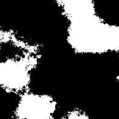

Histogram Scan

Histogram Scan
In: Filters/Adjustments
Simple
Description
Very simple yet useful node that provides an intuitive way to remap the contrast and brightness of input grayscale images. Can be used to "grow" and "shrink" masks in dynamic ways.
Click here to watch a Substance Academy video on Histogram operations.
Parameters
- Position: 0.0 - 1.0
Similar to a brightness control, shifts the midpoint of the result. When used on a gradient input, this expands and shrinks the transition point.
Important: a default value of 0 means the end result is always black, so try starting with 0.5! - Contrast: 0.0 - 1.0
Adjusts the contrast of the result. Can be used to set the hardness of the transition. - Invert Position: False/True
Inverts the final result.
Example Images

